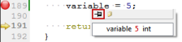

Tips and Tricks
Switching Between Modes
Qt Creator uses different modes for different purposes. You can quickly switch between these modes with the following keyboard shortcuts:
- Welcome mode Ctrl+1
- Edit mode Ctrl+2
- Design mode Ctrl+3
- Debug mode Ctrl+4
- Projects mode Ctrl+5
- Help mode Ctrl+6
For more information about Qt Creator modes, see Selecting Modes.
Moving Between Open Files
To quickly move between currently open files, press Ctrl+Tab.
To move forward in the location history, press Alt+Right (Cmd+Opt+Right on macOS). To move backward, press Alt+Left (Cmd+Opt+Left on macOS). For example, if you use the Locator to jump to a symbol in the same file, you can jump back to your original location in that file by pressing Alt+Left.
Moving To the Edit Mode
To move to the Edit mode and currently active file, press Esc.
If you already are in the Edit mode:
- The first press moves focus to the editor
- The second press closes secondary windows
Using the Filter in Options Dialog
To find specific settings you require in Tools > Options use the filter located at the top left of the Options dialog box.
Opening Output Panes
The output panes provide a list of errors and warnings encountered during a build, detailed output from the compiler, status of a program when it is executed and debug output, as well as search results.
To open output panes, use the following shortcuts:
- Issues pane Alt+1 (Cmd+1 on macOS)
- Search Results pane Alt+2 (Cmd+2 on macOS)
- Application Output pane Alt+3 (Cmd+3 on macOS)
- Compile Output pane Alt+4 (Cmd+4 on macOS)
To open the other output panes, such as General Messages and Version Control, select Window > Output Panes. The menu items also display the keyboard shortcuts that you can use.
For more information about output panes, see Viewing Output.
Using Keyboard Shortcuts
Qt Creator provides many useful keyboard shortcuts. You can see the keyboard shortcut for a menu command in the menu or the tooltip for a button.
To customize, import or export keyboard shortcuts, select Tools > Options > Environment > Keyboard.
Running Qt Creator From Command Line
You can launch Qt Creator from command line using the name of an existing session or .pro file by giving the name as the command argument.
For example, running qtcreator somesession, launches Qt Creator and loads session somesession.
For more information, see Using Command Line Options.
Showing and Hiding Sidebars
You can toggle the left and right sidebar in some Qt Creator modes.
To toggle the left sidebar, click (Hide Left Sidebar/Show Left Sidebar) or press Alt+0 (Cmd+0 on macOS).
To toggle the right sidebar, click  (Hide Right Sidebar/Show Right Sidebar) or press Alt+Shift+0 (Cmd+Shift+0 on macOS).
(Hide Right Sidebar/Show Right Sidebar) or press Alt+Shift+0 (Cmd+Shift+0 on macOS).
For more information on using the sidebars, see Browsing Project Contents.
Moving To Symbols
To move straight to a symbol used in a project, select the symbol in the Editor toolbar drop-down menu. For more information on the editor toolbar, see Using the Editor Toolbar.
To jump to a symbol in the current file, press Ctrl+K to open the Locator, enter a period (.), and start typing the symbol name. Then select the symbol in the list. For more information on using the locator, see Searching with the Locator.
Press Ctrl (Cmd on macOS) and click a symbol to move directly to the definition or the declaration of the symbol. You can also move the cursor on the symbol and press F2. For more information, see Moving to Symbol Definition or Declaration.
Displaying Signals and Slots
If an instance of a class is derived from QObject, and you would like to find all other objects connected to one of your object's slots using Qt's signals and slots mechanism, select Tools > Options > Debugger > Locals > Use Debugging Helper.
In the Locals view, expand the object's entry and open the slot in the slots subitem. The objects connected to this slot are shown as children of the slot. This method works with signals too.
For more information about the Locals view, see Local Variables and Function Parameters.
Displaying Low Level Data
If special debugging of Qt objects fails due to data corruption within the debugged objects, you can switch off the debugging helpers. When debugging helpers are switched off low-level structures become visible.
To switch off the debugging helpers:
- Select Tools > Options > Debugger > Locals.
- Uncheck the Use Debugging Helper checkbox.
Showing Tooltips in Debug Mode
To inspect the value of variables from the editor, you can turn on tooltips. Tooltips are hidden by default for performance reasons.
- Select Tools > Options > Debugger > General.
- Select the Use tooltips in main editor while debugging check box.
When you hover over a variable in the code editor in Debug mode, a tooltip is displayed. To keep the tooltip visible, click the pin button. You can expand pinned tooltips to view their full content.

Pinned tooltips are stored in the session. To close all pinned tooltips, select Close Editor Tooltips in the context menu in the Locals view.
Locating Files
The Locator provides one of the easiest ways in Qt Creator to browse through projects, files, classes, functions, documentation and file systems. To quickly access files not directly mentioned in your project, you can create your own locator filters. That way you can locate files in a directory structure you have defined.
To create locator filters, select Tools > Options > Locator > Add.
For more information, see Creating Locator Filters.
Adding a License Header Template for C++ Code
A file containing a license header for C++ can be specified under Tools > Options > C++ > License Template. It may contain special placeholders enclosed in %% that are replaced when generating a new file:
%YEAR%: Year%MONTH%: Month%DAY%: Day of the month%DATE%: Date%USER%: Username%FILENAME%: File name%CLASS%: Class name (if applicable)%$VARIABLE%: Contents of environment variableVARIABLE.
Pasting from Clipboard History
Qt Creator stores copied text in clipboard history. To retrieve clips from the history, press Ctrl+Shift+V until the clip appears. The number of clips in the history is fixed to 10.
Sorting Lines Alphabetically
To sort selected lines alphabetically, select Edit > Advanced > Sort Selected Lines or press Alt+Shift+S (or Ctrl+Shift+S on macOS).